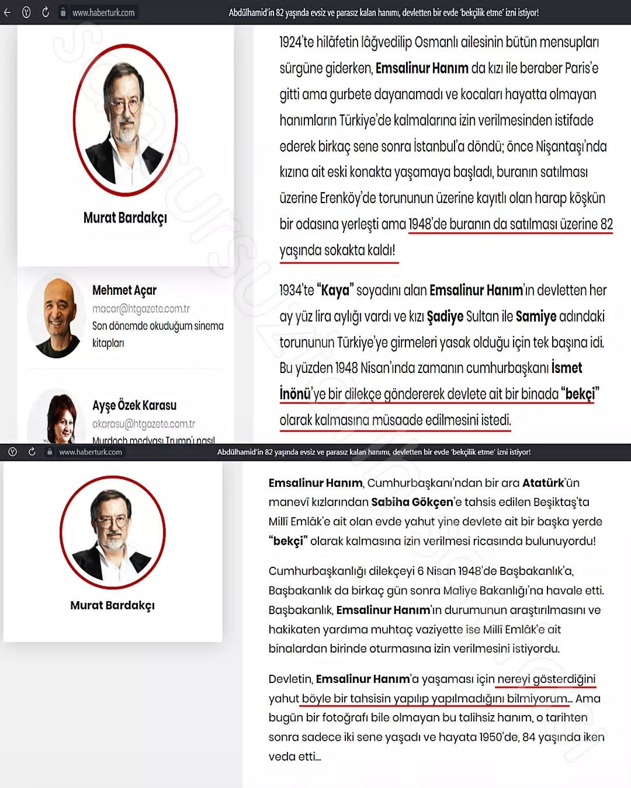
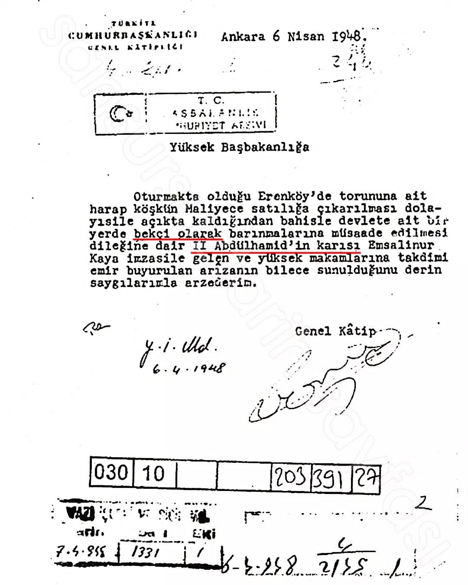
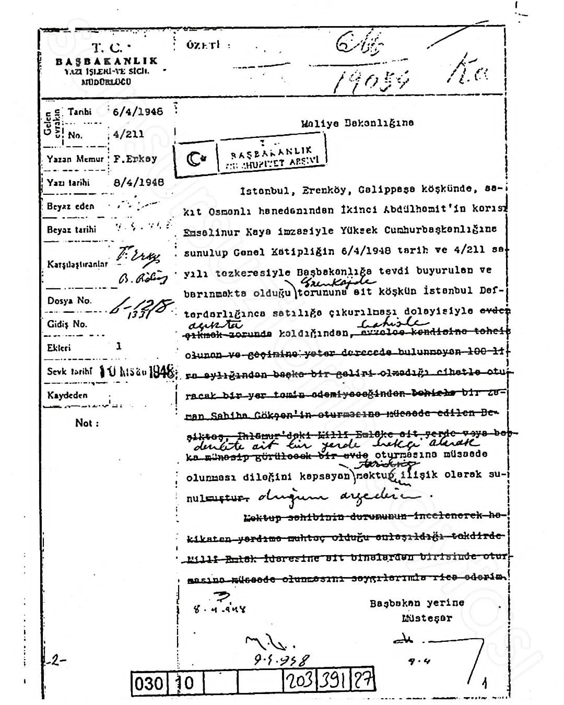
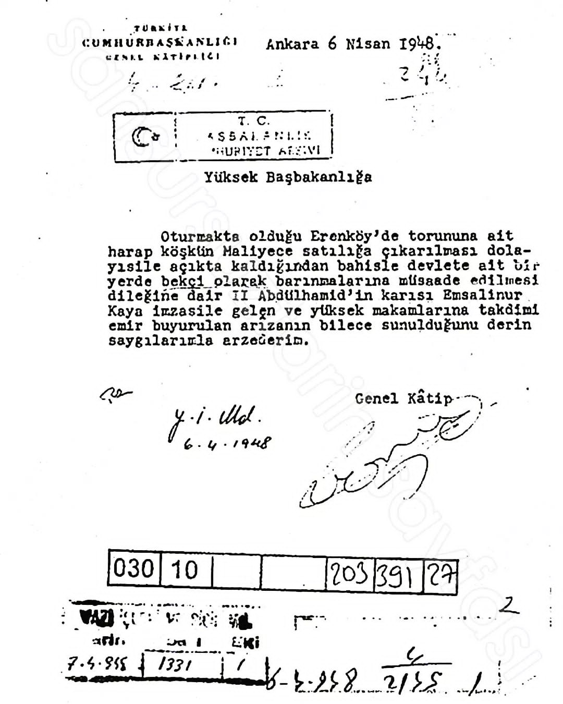

Sultan II.Abdülhamid Han'ı seversiniz sevmezsiniz. Osmanlı'nın en çetrefilli döneminde Devleti olabildiğince 33 yıl ayakta tutmuş İslam Halifesi Sultan II Abdülhamid Han'ın emanetine bunu reva görmek bir insanlık ayıbıdır. Kaldı ki bu kadıncağız 82 yaşında. Maliye sokakta kalacağını bile bile kadıncağızın evini satıyor ve bu kadın devletten kalacak bir yer tahsis edilmesini istiyor.
O da olmazsa : "devletin vereceği herhangi bir yerinde bekçi olarak kalayım bari en azından bu yaşta sokakta kalmam başımı sokacak bir yerim olsun diyor." Bir zamanlar makamında Osmanlı devletini temsil eden bir Cihan devletinin padişahının hanımına bu reva'yı görmek intikam değilse nedir? Dünyanın neresinde böyle bir şey var? İngilizler, İngiltere Kraliçesinin ailesinden birine bunu yapabilir mi?




Abdülhamid Han'ı sev sevme zerre umrumda değil lakin 6 asırdır bu topraklarda hüküm süren Osmanlı Hanedanına bu YAPILMAZ. YAPANLARADA HAKKIMI HELAL ETMİYORUM. Ecdadınıza gram saygınız varsa sizde hakkınızı HELAL ETMEZSİNİZ.